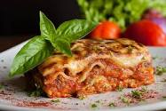

Lasagna

Descriptions
Lasagna: Origins and Varieties of the Beloved Baked Pasta ...
Lasagna, famed worldwide, has ancient origins and remains an Italian superstar dish. Basically, lasagna is a baked casserole made with wide flat pasta and layered with fillings such as ragú, bechamel, vegetables and various cheeses.
Ingredients
- dried sheets of pasta layered with rich meat ragú
- ricotta
- mozzarella
Steps
- Heat the oven to 400ºF.
- Brown the beef and onion.
- Begin layering the lasagna.
- Continue layering the lasagna.
- Bake the lasagna for 1 hour.
- Sprinkle with the remaining mozzarella and finish baking.
- Sprinkle with the remaining mozzarella and finish baking